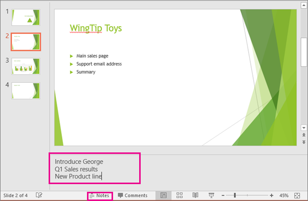
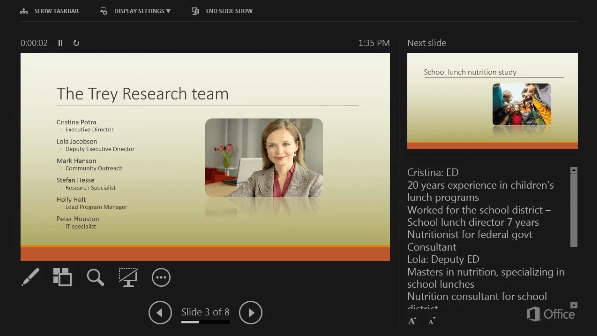
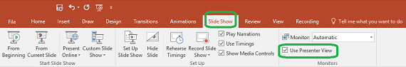

Add speaker notes to your slides
During your presentation, the speaker notes are visible on your monitor, but aren't visible to the audience. So the Notes pane is the place to store talking points that you want to mention when you give your presentation.
Add notes while creating your presentation
The Notes pane is a box that appears below each slide. (It is outlined in magenta in the picture below.) An empty Notes pane will prompt you with text that says, Click to add notes. Type your speaker notes there. If you don’t see the Notes pane or it is completely minimized, click Notes on the task bar across the bottom of the PowerPoint window (also marked in magenta in the picture below).

If your notes exceed the allotted length of the Notes pane, a vertical scroll bar appears on the side of the pane. You can also enlarge the Notes pane by pointing your mouse at the top line of the pane and then dragging upward after the pointer turns into a double-headed arrow.
What the notes look like in Presenter view
When your computer is connected to a projector and you start the slide show , Presenter View appears on your computer's screen, while only the slides appear on the projector screen. In Presenter view, you can see your notes as you present, while the audience sees only your slides:

The notes appear in a pane on the right. The text should wrap automatically, and a vertical scroll bar appears if necessary. You can also change the size of the text in the Notes pane by using the two buttons at the lower left corner of the Notes pane:

Presenter view isn't something you have to create. PowerPoint assembles it for you by gathering the notes you've typed for each slide and pairing them with a set of controls for navigating through your presentation.
By default, PowerPoint is set to use Presenter view when you run a slide show. You can change this setting on the Slide Show tab of the PowerPoint ribbon:
